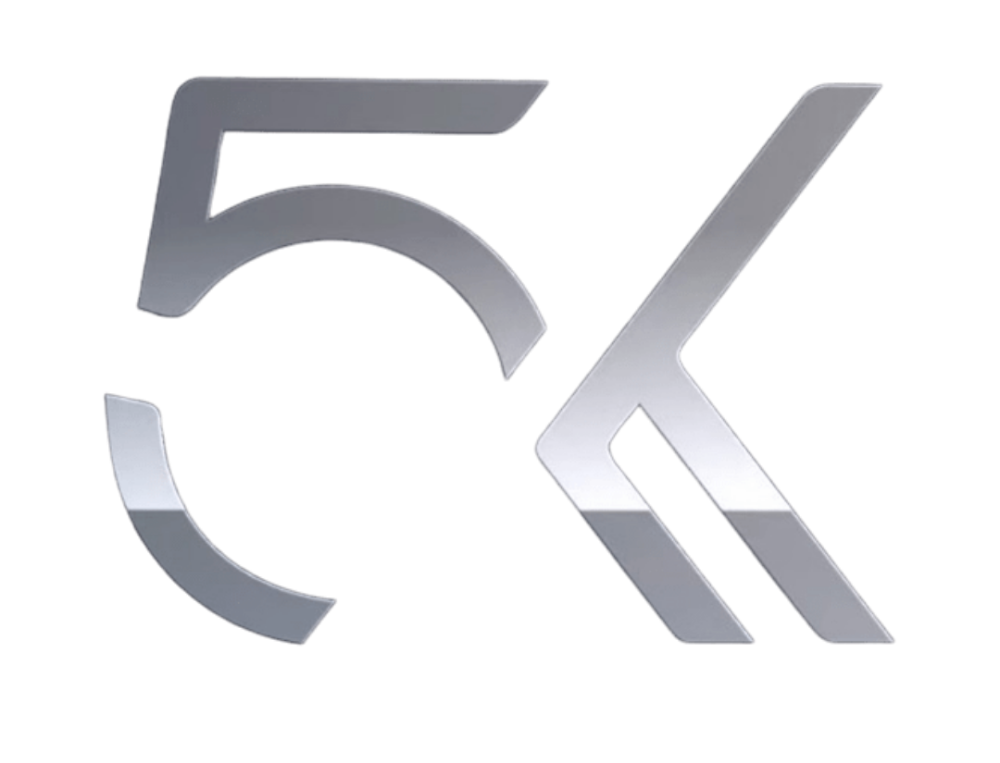
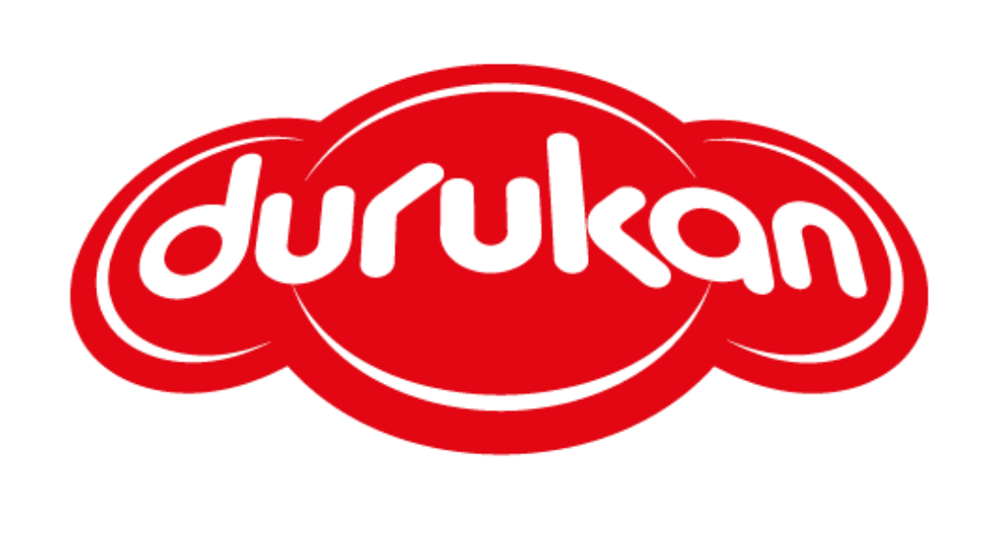
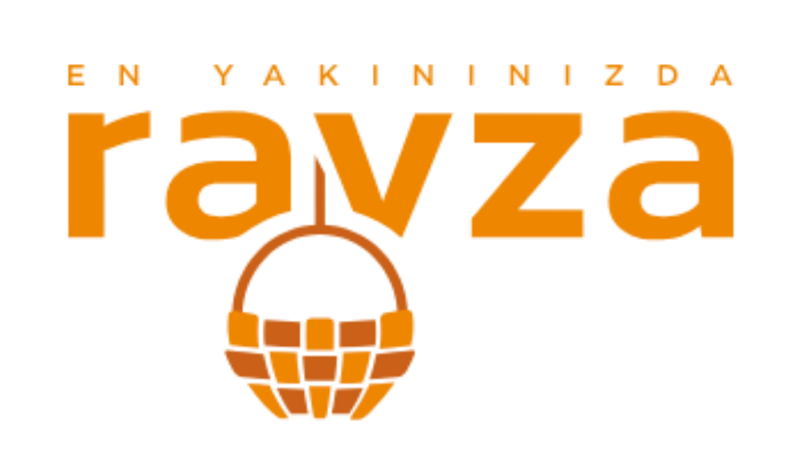

Endüstriyel Konveyör Üreticisi · 2001
Üretiminizi Hızlandıran Konveyör Sistemleri
Bantlı, rulolu, zincirli, vidalı… Sahanıza özel mühendislikle tasarlanan, dayanıklı ve verimli endüstriyel taşıma çözümleri.

24+
Yıllık Tecrübe
500+
Tamamlanmış Proje
10+
Sektör Uzmanlığı
7/24
Saha Desteği
Ürünler
Her İhtiyaca Özel Konveyör Çözümleri

PVC Bantlı Konveyör
Hafif ve orta yüklü ürünler için ideal.

Kauçuk Bantlı Konveyör
Ağır ve aşındırıcı malzemeler için dayanıklı.
Rulolu Konveyör
Kutu, palet ve düzgün tabanlı ürünler için.

Zincirli Konveyör
Yüksek tonajlı ve sıcak malzeme taşıma.

Vidalı Konveyör
Toz ve dökme malzeme için kapalı taşıma.

Kovalı Elevatör
Düşey yönde taşıma sistemleri.
Sektörler
Çözüm Sunduğumuz Endüstriler
Bize Güvenen Markalar




